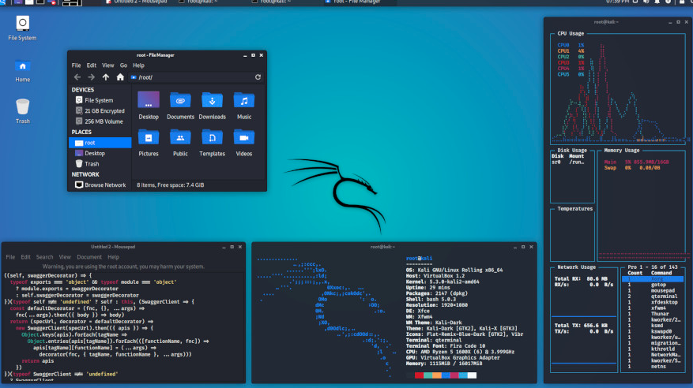
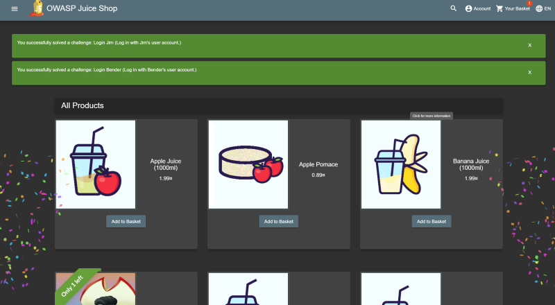

Penetration Testing Simulation in a Safe Lab
This activity demonstrates a penetration testing simulation conducted in a controlled and authorized environment.
The goal is to understand common vulnerabilities, assess system exposure, and improve defensive security practices.

What is Penetration Testing?
Penetration testing is a security assessment technique used to evaluate the security of systems, networks,
or applications by simulating real-world attack scenarios in a controlled environment.
It helps identify vulnerabilities before they can be exploited maliciously.
Lab Environment Setup
- Virtual Machine software: VirtualBox / VMware
- Attacker machine: Kali Linux
- Target machine: DVWA / Metasploitable / OWASP Juice Shop
- Network type: Host-only / Internal Network
Testing Methodology
The penetration testing simulation followed a structured and ethical methodology:
- Reconnaissance: Identifying target IPs and exposed services
- Scanning: Enumerating open ports and services
- Vulnerability Identification: Detecting misconfigurations and known weaknesses
- Exploitation (Simulated): Testing vulnerabilities within lab scope only
- Mitigation: Identifying fixes and security improvements
Findings & Observations
During the simulation, several common security weaknesses were identified, including
weak authentication mechanisms and exposed services.
These findings highlight the importance of secure configurations, patch management,
and access control.

Security Recommendations
- Disable unused services and close unnecessary ports
- Apply strong authentication and password policies
- Regularly update systems and applications
- Use firewalls and intrusion detection systems
- Perform periodic security assessments
Reflections
This activity improved my understanding of penetration testing methodologies and the importance
of ethical security testing. Working in a safe lab environment reinforced responsible practices
and strengthened my defensive security knowledge.